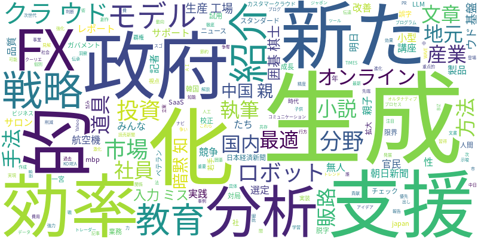

☁️ 今日のトレンドワード

📰 今日のピックアップニュース (10件)
FX市場をAIが徹底分析
みんなのFXが提供するAI分析レポートでは、最新の市場トレンドや過去のデータに基づき、FX市場の動向を詳細に分析しています。投資判断に役立つ洞察を提供し、トレーダーの戦略立案をサポートします。
政府、AI・ロボット技術を戦略支援
政府は、小型無人航空機やAIロボットなどの分野を重点的に支援するため、官民投資の「戦略17分野」で61の製品・技術を新たに選定しました。これにより、国内の先端技術開発と産業競争力の強化を目指します。
AIが小説執筆をサポート
朝日新聞の記者サロンでは、AIの支援を受けて小説を執筆する試みが紹介されました。AIがアイデア出しや文章生成を助けることで、執筆プロセスが効率化され、新たな創作の可能性が広がっています。
中国の親、AIで教育を最適化
中国の親たちがAIを活用して子供の教育を最適化する手法が注目されています。AIによる個別最適化された学習プログラムは、教育費の節約だけでなく、親子間のコミュニケーション改善にも貢献していると報告されています。
生成AIで暗黙知を伝承
mbp-japan.comが提供するオンライン講座では、生成AIを活用してベテラン社員の暗黙知を若手社員に効率的に伝達する実践的な手法を解説します。明日からすぐに活用できる品質スタンダードを習得できます。
生成AIで入力ミスを削減
日本経済新聞の記事では、生成AIや文章校正機能を用いた誤字脱字のチェック方法が紹介されています。これらのAIツールを活用することで、入力ミスを効果的に減らし、文書作成の精度を高めることができます。
囲碁棋士、AIを成長の道具と捉える
韓国の囲碁棋士が、AIとの対局から10年を経て、AIを人間の限界を超えるための強力な道具として捉えているという見解を示しました。AIとの共存が、囲碁の世界に新たな発展をもたらしています。
地元企業、生成AIで販路・効率化
一宮市の地元企業5社が、生成AIの活用事例を紹介しています。AIを用いることで、販路拡大や業務効率化を実現し、事業成長に繋げている具体的な方法が報じられています。
「AI生産工場」新モデル登場
カスタマークラウドが、SaaSの次世代として「AI生産工場」という新たなAI産業モデルを発表しました。日本政府の「ガバメントAI」でも試用されるこのモデルは、国内LLM企業の進化を示唆しています。
AI時代、クラウド基盤の争奪戦
AIの社会実装が進む中で、それを支えるクラウド基盤の覇権争いが激化しています。『ビジネス2.0』の視点から、この競争の行方とAI時代におけるクラウドの重要性が論じられています。
今日のAI・テック業界は、政府による先端技術への戦略的投資や、AIを活用した教育・業務効率化といった実用化の動きが活発化しています。特に生成AIは、小説執筆や暗黙知の伝承、さらには販路拡大や業務改善といった多様な分野でその可能性を示しています。また、AIを人間の能力拡張や限界突破の「道具」と捉える見方や、AI実装を支えるクラウド基盤の覇権争いも注目されており、AI技術の進化が社会のあらゆる側面に影響を与え、新たな産業モデルを生み出す勢いがあることを示唆しています。AIと人間の協調・共存、そしてその基盤となるインフラの競争が、今後のテクノロジー業界の鍵となるでしょう。